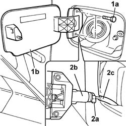

7025C10 FUEL FILLER FLAP - R+R
- Path
- Procedures > 70 FITTINGS > 7025 COMPARTMENT LIDS > 7025C VARIOUS FLAPS (EXTERIOR) > 7025C10 FUEL FILLER FLAP - R+R
- Kind
- repair procedure (removal / refitting; the operation number is the code)
- Applies to
- all engines; all production periods
- Interactive page
- https://sloeber94.github.io/elrnDB-fUlss/en/#/179007755
Applies to: all engines; all production periods
 Removing
Removing
 Refitting
Refitting- Open the fuel filler cap access flap.
1. Undo the fixing bolts (1a) and extract the flap (1b) from the housing.
2. Acting on the throttle (2a), separate the fuel filler access flap (2b) from the opening cable (2c).

Applies to: all engines; all production periods
Refitting
Removing- Position the fuel filler flap in its seat.
- Using the throttle, secure the flap opening cable to the fuel flap.
- Tighten the bolts fixing the flap to the fuel filler.
- Open the fuel filler cap access flap.